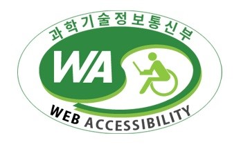

보통 인터넷을 이용할 때 같은 웹페이지라면 어느 브라우저를 사용하는지 여부에 상관없이 그 웹페이지가 똑같이 보이고 정상적으로 작동해야 함을 의미한다.
웹 환경은 본질적으로 '통신'이기 때문에 더욱 더 표준화가 중요해진다. 비표준 '부품'이야 자기네 제품에만 독점적으로 사용할 거라면 크게 상관없지만 웹은 누가 어떤 장치를 어떤 방식으로 사용할지를 제공자가 통제할 수 없기 때문이다. 인터넷 그 자체가 크로스 플랫폼인 이유.
즉 "이 사이트는 인터넷 익스플로러 6, 1024x768해상도에서만 이용하실 수 있습니다." 따위의 말은 그저 횡포일 뿐이다. 본인이 갑이 아닌데도 불구하고 이런 횡포를 부린다면, 그건 장사하기 싫단 소리밖엔 안 된다. 민원24같은 전자정부 사이트는 갑의 요건을 일부 충족하기 때문에 아직도 배째라 영업(?)이 가능한 면이 있지만 시대를 역행하는 것임에는 변함이 없다.
웹접근성은 장애 여부에 상관없이 누구나 원활하게 웹페이지를 이용할 수 있어야 한다는 것을 의미한다.
예를 들어 시각장애인의 경우 화면을 눈으로 볼 수 없기 때문에 그렇지 않은 사람과 같은 방식으로는 웹페이지를 이용할 수 없다. 그래서 '스크린 리더'라는 별도의 소프트웨어를 컴퓨터에 설치해서 인터넷을 이용한다. 스크린 리더는 모니터에 비춰지는 내용을 인식해서 음성, 점자로 출력해주는 역할을 한다.예를 들어 화면에 '메뉴'라는 텍스트가 있으면 이를 인식해서 '메뉴'라는 음성이 나오는 방식이다.
시각장애인은 이를 이용해 눈으로 보는 대신 소리로 들으면서 웹페이지에 담긴 정보를 이해할 수 있다. 하지만 스크린 리더는 소프트웨어에 불과하므로 스스로 웹페이지의 내용을 분석해서 이건 무슨 내용이고 저건 무슨 내용이다라는 걸 이해할 수 없다. 특히 이미지의 경우가 그렇다.'메뉴'라고 텍스트로 집어 넣지 않고 메뉴라고 그려진 이미지를 사용하면 비 시각 장애인의 눈에는 똑같이 메뉴라고 보이지만 소프트웨어 입장에서는 그저 이미지일 뿐이다. 그 이미지 안에 그려진 내용을 인식하는 것은 불가능하다. 그래서 되도록이면 이미지를 사용하지 말고 소스 코드에 내용을 그대로 담는 것이 권장되며,
부득이하게 이미지를 사용할 경우 반드시 이 이미지가 어떤 내용인지 설명을 추가해야 한다.